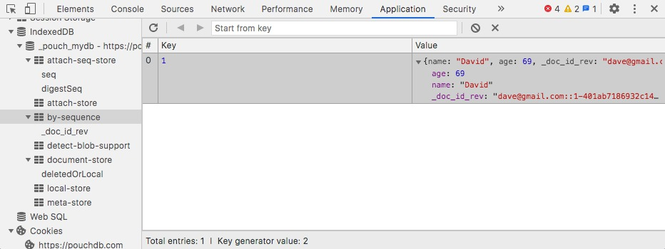
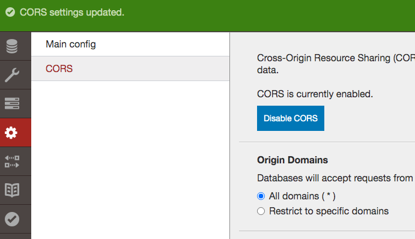

Met replication is het eenvoudig om clusters van clones te maken om de 99.9% uptime te kunnen garanderen, gegeven de juiste loadbalancing instellingen. Als voorbeeld gaan we een open-source JavaScript DB gebruiken genaamd PouchDB. PouchDB draait goed client-side in de browser, en interfacet heel gemakkelijk met zijn inspirator, CouchDB. Met Pouch is het een kwestie van een paar regeltjes code om replication aan te zetten tussen Pouch en de “master” Couch database, zoals ook zichtbaar op de Pouch website:
var db = new PouchDB('dbname');
db.put({
_id: 'dave@gmail.com',
name: 'David',
age: 69
});
db.changes().on('change', function() {
console.log('Ch-Ch-Changes');
});
db.replicate.to('http://example.com/mydb');
Wat is het doel? Replication op te zetten tussen de cursussen database van 2. document stores en de PouchDB JS web-based client. Dat kan op verschillende manieren:
Je kan bovenstaande demo code onmiddellijk proberen op https://pouchdb.com: Druk op F12 of CTRL+SHIFT+J (Mac: OPT+CMD+J) of ga naar menu Developer -> Developer Tools van je favoriete browser. In de tab “Console” wordt je begroet door de PouchDB welkomsttekst. Daar kan je je test commando’s in uitvoeren: var db = .... Om te controleren of het record het tot in de database heeft gehaald, zie hieronder, bij tips.
Gebruik in de oefeningen de CDN versie om het jezelf gemakkelijk te maken. Maak een leeg .html bestand aan en kopieer de Quick Start code over:
<script src="//cdn.jsdelivr.net/npm/pouchdb@7.2.1/dist/pouchdb.min.js"></script>
<script>
var db = new PouchDB('my_database');
</script>
Vergeet niet dat je lokale CouchDB waarschijnlijk draait op poort 5984.
Een uitgewerkt voorbeeld in begeleidende video:
db.put(). Vul alle JSON properties in: kijk naar een bestaand document in je Couch database..html bestand aan, en stel een remote URL in om vanuit JS onmiddellijk op de remote DB te kunnen queryen.
pouchdb.find.js, zoals aangegeven in de link, downloadbaar hier en zorg ervoor dat zowel PouchDB als de find versies van dezelfde release komen!{ map: function(doc) { emit(...); }, reduce: '_count}. Zie docs in link..html bestand aan, en stel continuous replication in. Voeg dan een nieuw document toe in de CouchDB Admin console. Maak in HTML een knop die gewoon records afdrukt via console.log(). Wordt het nieuwe document getoond? Gebruik deze boilerplate:<script src="https://cdn.jsdelivr.net/npm/pouchdb@7.2.1/dist/pouchdb.min.js"></script>
<button id="btn">Print docs</button>
<pre id="pre">
...
</pre>
<script>
function print(doc) {
document.querySelector('#pre').innerHTML = JSON.stringify(doc);
}
var db = new PouchDB('my_database');
// do your setup here
function queryDocs() {
// do your thing here
print('goed bezig');
}
document.querySelector("#btn").addEventListener("click", queryDocs);
</script>
Tips: Wanneer je een item hebt toegevoegd aan je lokale JavaScript database met .put(), maar replication nog niet aan staat, kan het handig zijn om met Chrome/Opera/… Dev Tools te kijken naar de local storage databases. Deze zijn terug te vinden in de tab “Application”, bij “IndexedDB”:

De volgende elementen zijn te herknnen in bovenstaande screenshot:
mydb” object aangemaakt (DB naam _pouch_mydb)by-sequence” kan je de huidige elementen in de DB raadplegen, zoals bovenstaande demo code waarbij object met naam “David” werd toegevoegd.Cross site origin fouten? - Het kan zijn dat je browser, zoals een strict ingestelde Firefox, klaagt over Cross-Origin domains wanneer replication aan staat, omdat die naar 127.0.0.1 gaat, en je browser de .html file servet vanuit file:/// wat technisch gezien niet dezelfde hostname is. Oplossing 1: gebruik een andere browser. Oplossing 2: disable CORS in de browser (zie artiel). Optie 3: gebruik een python3 webserver om je bestand te serven. Open een terminal en typ python -m http.server in de directory van je html bestand. Ga dan naar localhost:8000/oefening.html. Indien niet opgelost, ga naar volgende troubleshooting puntje:
Connecton errors? - Als Pouch bij replication connection errors geeft in de JS Console kan het zijn dat je Couch server te streng staat ingesteld, en hij de requests blokkeert. In dat geval ga je naar Fauxton, klik je op het “tandwieltje” links, en enable je CORS (Cross Origin Requests):

Access denied? - Als je een admin username/password hebt ingesteld dien je dit ook mee te geven met de parameters: new PouchDb("http://localhost:5984", { auth: { username: "jef", password: "lowie"} }). Zie options for remote databases in de PouchDb API manual.
Mijn find() doet niks? - Merk op dat eender welke actie een Promise object teruggeeft. Dat wil zeggen dat de query “onderweg” is, en als je iets wilt uitvoeren wanneer dit klaar is (een asynchroon proces), moet dit via de Promise API, zoals .then(). Lees hierover in de Mozilla MDN docs.
Ik krijg rare javascript errors? - Is je pouch.min.js en pouch.find.min.js versie dezelfde? D.w.z. zijn de major/minor/revision nummers hetzelfde? Dit staat aangeduid in de eerste regel van de source file. Indien niet, download de correcte versie via de PouchDB Github Releases pagina.
Ik krijg 404 object not found bij put? - Heb je je remote DB opgezet naar een onbestaande database, zoals /hallokes? Die moet je eerst zelf aanmaken in de CouchDB admin pagina! Anders kan je geen PUT commando’s op die URL opsturen.
Uncaught in Promise request PUT not supported? - In serviceWorker.js? Ben je op de pouchdb.com website in de console dingen aan het testen? Sommige scripts, zoals deze, vangen PUT commando’s op en crashen dan. Je object zal wel correct zijn bewaard, dit mag je negeren.
POST/GET metadata wordt verstuurd?